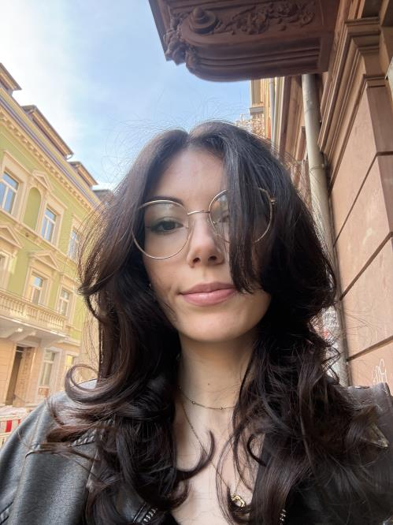
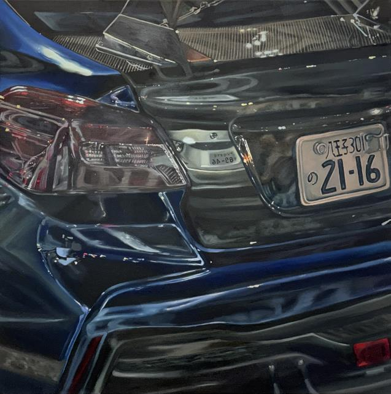
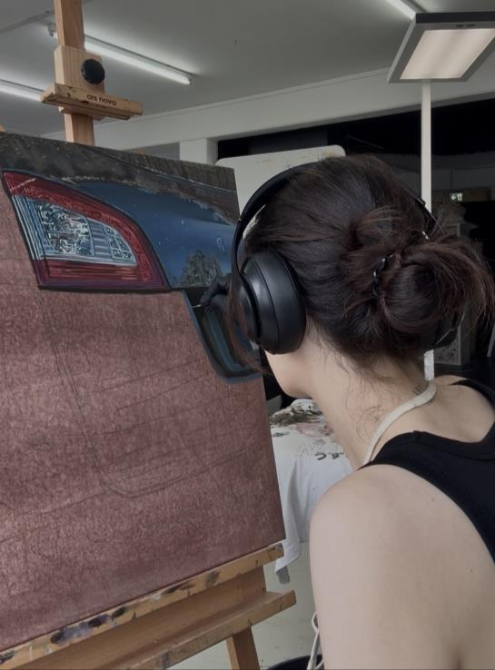

Geboren in Esch-sur-Alzette
Luxemburg
DIE KÜNSTLERIN
Hey, ich bin Morena.
Ich male fotorealistische Ausschnitte von Autos, deren Spiegelungen die Grenze zwischen Abbild und Wahrnehmung verschieben.

Meine Vorlagen sind eigene Schnappschüsse. Der flüchtige Moment wird durch den langsamen, handwerklichen Prozess zeitlich ausgedehnt und neu verhandelt. Als Konsumobjekte werden Fahrzeuge zu Projektionsflächen für persönliche Erzählungen über Begehren, Kontrolle und Schönheit.
Aus meiner Perspektive heraus entstehen Darstellungen, in denen industrielle Materialien unerwartet weich und beinahe verletzlich erscheinen. Die Bilder entstehen an unterschiedlichen Orten und reflektieren Bewegung, Geschwindigkeit und Reisen.
STANDORT LuxemburgTECHNIK Öl, Buntstift, FotorealismusSTUDIUM Bildende Kunst, Freiburg
WARUM AUTOS?
Mehr als
ein Motiv.
Autos sind mit Erinnerungen an meine Familie verbunden. Mich faszinieren Technik, Farbspiele und Spiegelungen. Mit meiner eigenen Sicht biete ich der männlich geprägten Autokultur einen Perspektivwechsel an — und mache die Oberfläche des Metalls weich und beinahe romantisch.


VOM FOTO ZUR LEINWAND
Langsam sehen.
Schicht für Schicht.
Jedes Bild beginnt mit einer eigenen Fotografie. Ich projiziere das Motiv auf die selbst bespannte und grundierte Leinwand und arbeite mich Teil für Teil hindurch. Spiegelungen und feinste Farbnuancen machen aus einem flüchtigen Schnappschuss einen entschleunigten Moment.
MEIN WEG
Ein Blick in den Lebenslauf.
Kunstabitur
Athenäum von Luxemburg
Bachelor of Arts, Bildende Kunst
Macromedia Hochschule, Freiburg
Förderpreis für Bildende Kunst
Städtische Galerie MORAT, Freiburg